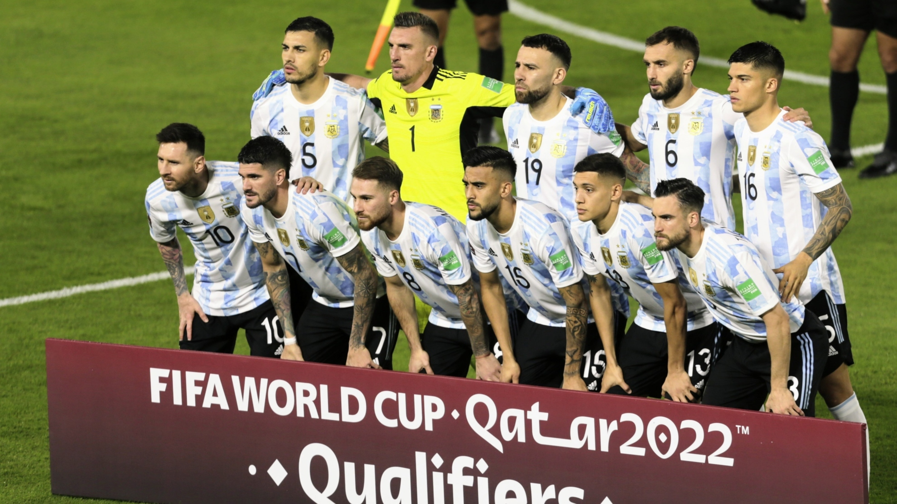

Argentina en QATAR 2022
Mundial Qatar 2022: días y horarios de la selección argentina en la Copa del Mundo El equipo nacional compartirá el Grupo C junto a Polonia, México y Arabia Saudita; cuándo se disputará cada enfrentamiento y qué horarios hay que ir agendando, a cuatro meses del inicio

La selección argentina debutará en la Copa del Mundo el 22 de noviembre, desde las 07.00 (hora argentina) frente a Arabia Saudita
La Argentina ocupa el tercer lugar en el ranking FIFA. En cuanto a sus rivales en la primera etapa, México aparece 12° (11° entre los clasificados por la ausencia de Italia), Polonia 26° (23° entre los clasificados) y Arabia Saudita 53° (penúltimo entre los clasificados, ya que solo ocupa una mejor posición que Ghana).